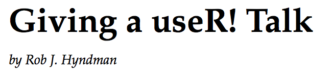
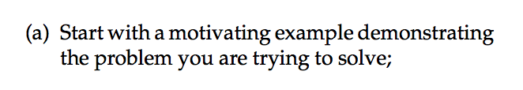
## Pos1 Pos2 Pos3 Pos4 Pos5
## A 0.4 0.1 0.60 0.4 0.300
## C 0.1 0.7 0.30 0.1 0.650
## G 0.1 0.1 0.05 0.1 0.025
## T 0.4 0.1 0.05 0.4 0.025
Score of Motif \(X=TCCAA\):
\[ S = \log\left(\frac{P_{M}(X)}{P_{bg}(X)}\right) = \color{red}2.33\color{black} \]
How often will such a score occur by chance?
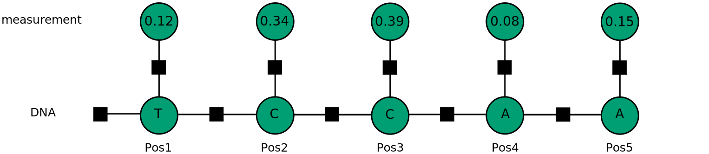
\[ p(x) = f_a(x_1)f_b(x_1, x_2) \]
\[ p(x) = p(x_1)p(x_2\mid x_1) \]
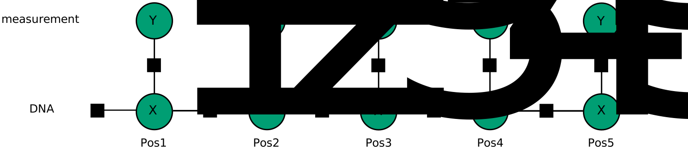
library(dgRaph)
varDim <- c(rep(4,5),rep(100,5))
facPot <- list(multinomialPotential(dim = c(1, 4)), # Prior
multinomialPotential(dim = c(4, 4)), # Transition
betaPotential(dim = c(4, 100))) # Emission
facNbs <- list(1,
c(1,2), c(2,3), c(3,4), c(4,5),
c(1,6), c(2,7), c(3,8), c(4,9), c(5,10))
potMap <- c(1,2,2,2,2,3,3,3,3,3)
bgDfg <- dfg(varDim, facPot, facNbs, potMap,
varNames = c("X1","X2","X3","X4","X5","Y1","Y2","Y3","Y4","Y5"))
plot(bgDfg, layout = layout.reingold.tilford)
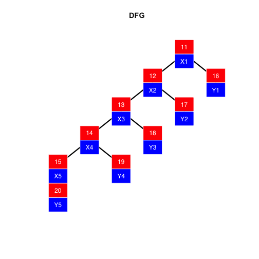
df <- read.delim("df.tab")
head(df)
## X1 X2 X3 X4 X5 Y1 Y2 Y3 Y4 Y5
## 1 1 1 4 4 1 23 41 11 28 20
## 2 2 3 3 2 2 71 83 46 78 61
## 3 2 2 2 1 1 72 86 52 11 31
## 4 2 2 3 2 2 78 61 75 68 76
## 5 4 4 3 NA 2 69 26 88 69 88
## 6 2 NA 1 1 NA 59 17 11 19 70
bgDfg <- train(data = df, dfg = bgDfg,
optim = c('row', 'row', 'beta'), verbose = T)
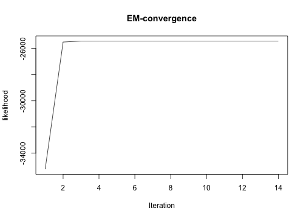
bgDfg <- train(data = df, dfg = bgDfg,
optim = c('row', 'row', 'beta'), verbose = T)
## Training...
## Iterations:..
## EM-algorithm converged after 2 iterations
## Likelihood: -25431.79
## 1th potential
## Row normalized multinomial potential
## 1 2 3 4
## 1 0.26983 0.23801 0.24829 0.24386
##
## 2th potential
## Row normalized multinomial potential
## 1 2 3 4
## 1 0.41565 0.07958 0.12378 0.38099
## 2 0.13434 0.37403 0.39234 0.099297
## 3 0.11646 0.41907 0.38714 0.077333
## 4 0.39591 0.095157 0.1045 0.40443
##
## 3th potential
## beta-potential update
## 1 alpha: 2.0295 beta: 5.1511
## 2 alpha: 5.4467 beta: 2.126
## 3 alpha: 5.0221 beta: 1.8588
## 4 alpha: 1.841 beta: 4.241
Train a motif model as well
motifDfg
How often do we encounter a certain score by chance?
Use a class of distributions parameterized by \(\alpha\):
\[ P^{IS}(X) = P_{M_1}(X)^{(1-\alpha)}P_{M_2}(X)^{\alpha} \]
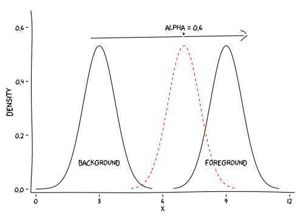
x <- seq(-6,4,0.01)
dfis <- tailIS(x, n=10000, alpha=1, dfg1 = bgDfg, dfg2 = motifDfg)
head(dfis)
## x p low high p_lower alpha
## 1 -6.00 0.9364139 0.7674401 1 0.06358606 1
## 2 -5.99 0.9364139 0.7674401 1 0.06358606 1
## 3 -5.98 0.9364139 0.7674401 1 0.06358606 1
## 4 -5.97 0.9364139 0.7674401 1 0.06358606 1
## 5 -5.96 0.8975813 0.7466306 1 0.10241871 1
## 6 -5.95 0.8975813 0.7466306 1 0.10241871 1
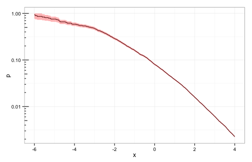
x <- seq(-6,4,0.01)
dfSaddle <- tailSaddle(x, dfg1 = bgDfg, dfg2 = motifDfg)
head(dfis)
## x p low high p_lower alpha
## 1 -6.00 0.9364139 0.7674401 1 0.06358606 1
## 2 -5.99 0.9364139 0.7674401 1 0.06358606 1
## 3 -5.98 0.9364139 0.7674401 1 0.06358606 1
## 4 -5.97 0.9364139 0.7674401 1 0.06358606 1
## 5 -5.96 0.8975813 0.7466306 1 0.10241871 1
## 6 -5.95 0.8975813 0.7466306 1 0.10241871 1
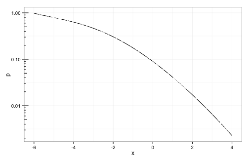
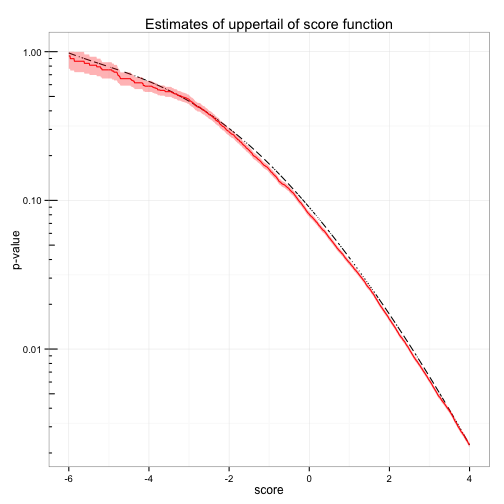
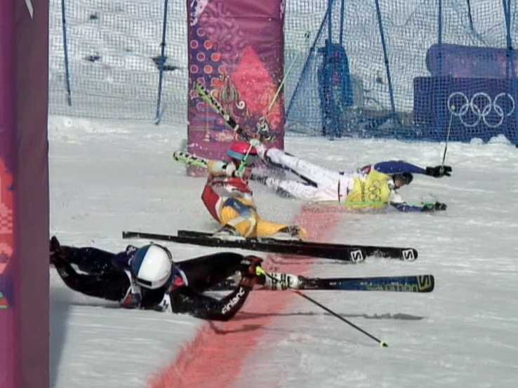